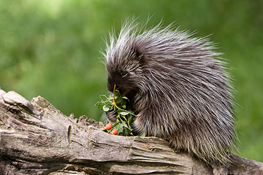
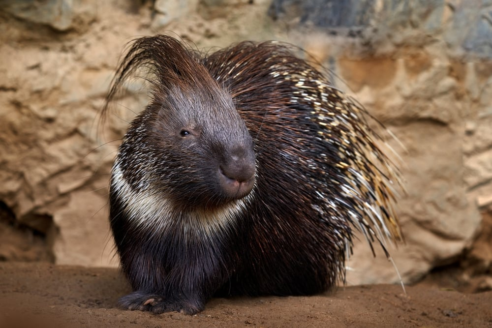

Es una especie de roedor, muy característico por sus púas. Al contrario de la creencia popular, los puercoespines son incapaces de lanzar sus púas de manera defensiva. Es un animal nocturno, poseedor de un olfato excepcionalmente sensible, mientras que el oído y la vista están poco desarrollados.
es el nombre común que se aplica de forma genérica a varias especies de mamíferos roedores del suborden de los histricomorfos. El término proviene de las características púas que cubren su piel y no tiene ningún significado taxonómico, ya que incluye géneros pertenecientes a dos familias distintas, Erethizontidae e Hystricidae, que no están especialmente relacionadas. A pesar de su nombre común, no tienen ningún parentesco con los cerdos
¿DE QUE SE ALIMENTAN PRINCIPALMENTE?
Comen tallos y cortezas, y en ocasiones han invadido zonas pobladas por el hombre, destrozando todo lo que han encontrado a su paso. Los puercoespines norteamericanos también comen frutas, hojas, y brotes de primavera. Otras especies de puercoespín viven en África, Europa y Asia
